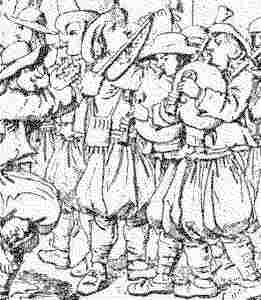

|
1.Gwelet em euz en eur flourenn
|
5.Hag eñ ken ampart ha ken drant !
E zilhad a aour hag arc'hant. 6.Hag ar gazeg 'dal m'e welas, En he sav soue'et a chomas 7.Ha goustadik a dostaas, Hag he fenn d'ar gleud astennas ; 8.Hag ar marc'heg he likaouas, Hag e veg d'he bek a lakas ; 9.Ha goude-se he briatas, Hag hi 'n em gavas en he aez, 10.Ha goude 'n deus he c'habestret, Ha goude en deus he senklet. O! Gra, pa ri tra, etc. |